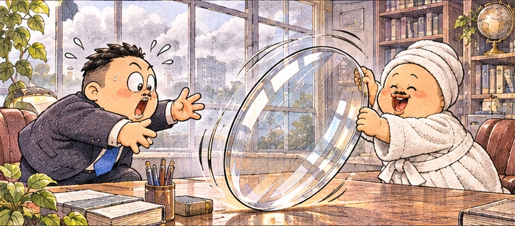
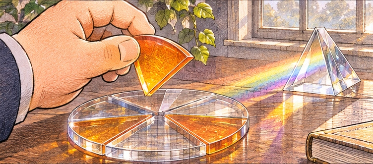
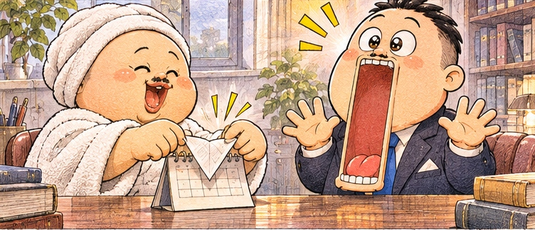
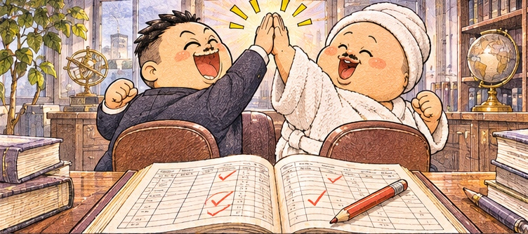

조심해! 10월 순매수를 한 판에 담았어!

주황 조각이 SOXL?

잠깐, 닷새만 보면?
순매수 상위 ETF 10개를 합쳐 한 판
미국 시장 · 2026년 10월 1~31일 · 달러 금액 비중
분모 ETF 10개 순매수 4,396,171,960달러
분자 SOXL 순매수 2,967,845,631달러

달력을 접어 봤다!10월 26~30일만 보면 ETF 1위는 TQQQ.
SOXL은 개별주를 포함한 주간 상위 50종목 밖이에요. 이 표만으로는 정확한 금액을 알 수 없어요.
SOXL은 개별주를 포함한 주간 상위 50종목 밖이에요. 이 표만으로는 정확한 금액을 알 수 없어요.